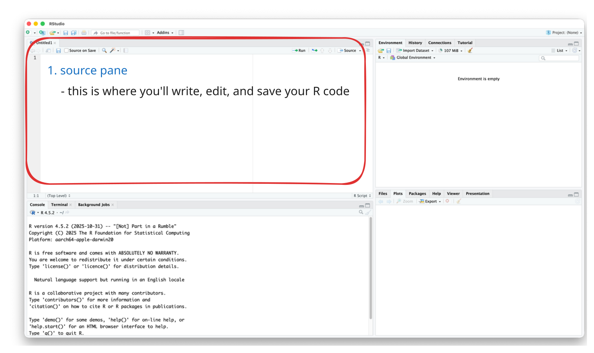
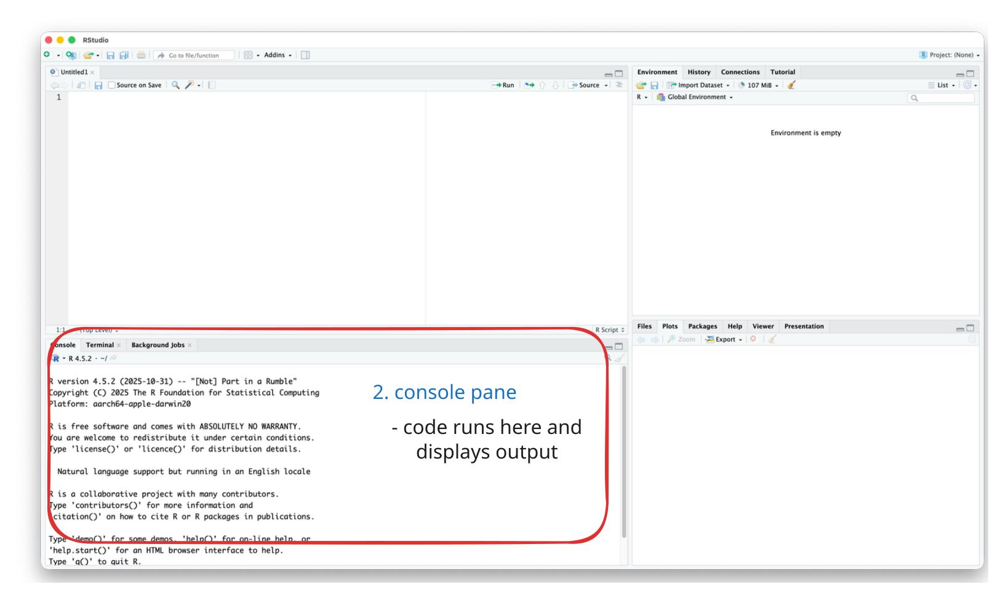
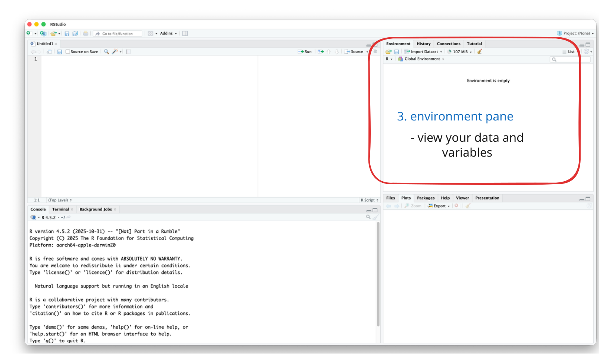
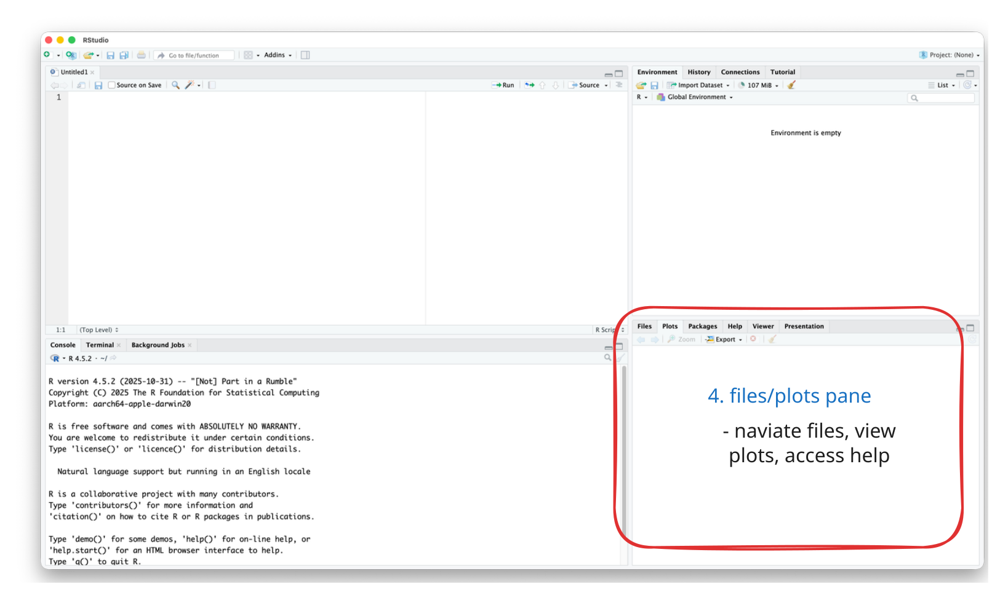

# Load data from multiple sources
hospital_data <- read_csv("hospital_readmissions.csv")
# Analyze and visualize
hospital_data |>
group_by(hospital_name, year) |>
summarize(readmission_rate = mean(readmitted)) |>
ggplot(aes(x = year, y = readmission_rate, color = hospital_name)) +
geom_line() +
labs(title = "30-Day Readmission Trends by Hospital")
# When data updates: just re-run this code!R, RStudio, Quarto, and Data Wrangling
Week 2
2026-01-21
Today’s Agenda
- Part 1: The Tools (R, RStudio, Quarto)
- Part 2: R Basics (Variables, Types, Structures)
- Part 3: Data Wrangling with dplyr
Goal: Build the foundation for all future analytics work
Introduction
Why Learn R for Healthcare/Data Analytics?
- Let’s think about the following scenario:
- Analyzing readmission rates across 50 hospitals with 3 years of monthly data
Excel Approach
- Manual copy-paste
- Click through menus
- Repeat when data updates
- Hard to document
- Error-prone
R Approach
- Write code once
- Automated updates
- Fully documented
- Easily shareable
- Reproducible & Scalable
The R Code
It’s reproducible, scalable, documented, and shareable!
R’s Growing Popularity
- R Popularity in Data Science

R’s Growing Popularity
- R Popularity in Academic Research

- Learning R = Access to cutting-edge methods + Strong job market demand + Free forever
- See the full report at r4stats.com
Learning Objectives
By the end of this session, you will be able to:
- Understand what R, RStudio, and Quarto are and how they work together
- Understand fundamental R concepts: variables, data types, and data structures
- Apply basic data wrangling techniques using the tidyverse
- Create a reproducible analysis document using Quarto
Part 1: The Tools
What is R?

R is a programming language designed for statistical computing and data analysis
Think of it like this:
- Excel is a tool (spreadsheet)
- R is a language (like English or Spanish)
Why R?
- Free and Open Source
- No licensing costs, ever
- Rich Ecosystem of Packages
- General:
dplyr,ggplot2,tidyr - Healthcare:
survival,tableone,medicaldata - Business:
forecast,caret,mlr3
- General:
- Reproducibility
- Essential for research, compliance, collaboration
- Industry Adoption
- Healthcare organizations, consulting firms, research institutions
What is RStudio?

RStudio is an IDE (Integrated Development Environment)
A user-friendly workspace for working with R
The Analogy

RStudio Interface: Four Panes

The Four Panes 1: Source Pane

The Four Panes 2: Console Pane

The Four Panes 3: Environment Pane

The Four Panes 4: Files/Plots Pane

What is Quarto?
Quarto combines three things in one document:
- Code (R, Python, etc.)
- Text (formatted with Markdown)
- Output (tables, figures, results)
It renders to, HTML, PDF, Word, Presentations, etc.
Why Use Quarto?
Traditional Approach (Word + Excel):
- Analyze data in Excel
- Create charts
- Copy-paste into Word
- Update text with numbers
- When data updates… 😰 repeat everything!
With Quarto:
- Update data file
- Click “Render”
- ✅ Done!
Everything updates automatically!
Quarto Document Structure
1. YAML Header
- Controls document settings
Code Chunk Options
- Control how code chunks behave with
#|options:
Common use cases:
| Option | Use Case |
|---|---|
echo: false |
Reports for non-technical audience |
eval: false |
Show code examples without running |
include: false |
Run code but hide everything (setup) |
Inline R Code
Insert R results directly into your text:
Syntax: Use ` r code `
Example:
Write: “The average patient age is
` r mean(patient_age) `”Rendered: “The average patient age is 45 years.”
💡 When data updates, all numbers update automatically!
Understanding R Packages
Packages = Collections of functions (like apps for your phone)
Your Phone
- Built-in apps (calculator)
- Download from App Store
- Open app to use
R
- Base functions
install.packages("name")library(name)
Key difference:
- Install ONCE:
install.packages("tidyverse") - Load EACH SESSION:
library(tidyverse)
The Tidyverse
Collection of 8 packages designed to work together:
- readr: Read data files
- dplyr: Manipulate data ⭐
- ggplot2: Visualizations
- tidyr: Reshape data
- tibble: Enhanced data frames
- stringr: Work with text
- forcats: Work with factors
- purrr: Functional programming
Load all 8 with one command: library(tidyverse)
Loading Data
CSV (Comma-Separated Values) is the most common format
File Not Found?
Check your working directory: getwd() and list.files()
👉 Try It Yourself!
Create your learning document:
- File → New File → Quarto Document
- Title: “Week 2 - My R Learning Notes”
- Author: Your name
- Format: HTML
- Save as
Week02_mynotes.qmd - Click “Render” to test
Let’s keep this document open and add code as we go!
Getting Help in R
You will get stuck. That’s normal! Here’s how to find help:
Built-in Help
Help Page Structure
- Description: What it does
- Arguments: Available options
- Examples: Copy and try!
External Resources: Google the error message, Stack Overflow, office hours, etc.
Part 2: R Basics
R as a Calculator
- You can do basic arithmatic calculations
+for addition-for subtraction*for multiplication/for division^for exponentiation
Creating Variables
- Use the assignment operator
<-to store values:
Variable Naming Rules
- Use descriptive names and avoid abstract names like
x,y,z - Use underscores instead of spaces
- Avoid using space, special characters, or starting with a number
- Case sensitive:
patient_countis different fromPatient_count
Data Types: Overview
R treats different types of data differently
- Numeric - Numbers (42, 3.14, 100)
- Character - Text (“Hospital”, “P-123”)
- Logical - TRUE or FALSE
- Factor - Categories (departments, severity)
1. Numeric (1/2)
- Numbers you can do math with
- Use for: Age, costs, lab values, any quantitative measure
1. Numeric (2/2)
- You can check the type using the
class()function
2. Character (Text) - 1/2
- Text data, always in quotes:
2. Character (Text) - 2/2
- Numbers can be characters, but you can’t do math with character data!
- You first need to covert its type
3.1. Logical (TRUE/FALSE)
- Only two values:
TRUEorFALSE(all caps, no quotes) - Use for Yes/No questions, filtering data, conditions, etc.
3.2. Comparison Operators
- Evaluate conditions and return TRUE or FALSE:
⚠️ Common Mistake: = vs ==
- Use
<-for assignment to avoid confusion, instead of using=
3.3. Logical Operators
- We can combine multiple conditions using logical operators:
&(AND): All conditions must be TRUE|(OR): At least one condition must be TRUE!(NOT): Reverses TRUE/FALSE
3.4. Combining Conditions
- Use parentheses
()for complex conditions:- Conditions inside parentheses are evaluated first
patient_age <- 72
systolic_bp <- 145
has_diabetes <- TRUE
# High risk = (age > 65 OR diabetes) AND high BP
high_risk <- (patient_age > 65 | has_diabetes) & (systolic_bp > 140)
high_risk
# Pediatric or geriatric patient
special_population <- (patient_age < 18) | (patient_age >= 65)
special_population4.1. Factor (Categories)
- For categorical data with predefined levels or groups:
- Required for many statistical analyses
- Control order in graphs
- More memory-efficient
- Use for: Department, insurance type, severity levels, etc.
4.2. Ordered Factors
- For categories with natural order:
Quick Checkpoint ✓
Before moving on, can you answer:
- What type is
42? → numeric - What type is
"42"? → character - What type is
TRUE? → logical - How do you test if age equals 65? →
age == 65 - How do you combine values into a vector? →
c()
If any are unclear, let me know!
👉 Try It Yourself!
Open Week02_practice.qmd and complete:
- Task 1.1: Creating variables with different data types
- Task 1.2: Working with vectors
Data Structures: Vectors (1/2)
- A vector is a sequence of elements of the same type
- If mixed, R will convert to the most general type
Data Structures: Vectors (2/2)
- You can access specific elements using
[]with indexing starting at 1 - You can also access a range of elements using
:
Vector Operations
- Operations apply to each element
- You can use functions like
mean(),sum(),min(),max()
Data Frames: Two-Dimensional Data
A table where:
- Each column is a vector (variable)
- Each row is an observation
- Columns can have different types
This is how most healthcare data is organized!
Viewing Data Frames
- Use
View()to open a data frame in a spreadsheet-like view - Use
str()to see the structure of a data frame
Accessing Data Frames
- Use
$column_name,[,column_number], or[,"column_name"]to access a column - Use
[row_number,]to access an entire row - Use
[row_number, column_number]or[row_number, "column_name"]to access a specific cell
Part 3: Data Wrangling
Why Tidyverse?
- Compare these two approaches (Traditional R vs. Tidyverse):
- Trying to get the average LOS for patients over 50
Tidyverse is much clearer! ✨
The Pipe Operator: |> or %>%
- Passes output from one function to the next
- Read it as “and then”
Keyboard shortcut: Cmd/Ctrl + Shift + M
Sample Dataset
- Let’s load a data using the code below:
- Install Tydiverse if you haven’t before:
install.packages("tidyverse")
Six Core dplyr Functions
select()- Choose columnsfilter()- Choose rowsmutate()- Create or modify columnsarrange()- Sort rowssummarize()- Calculate statisticsgroup_by()- Group-level operations
1. select() - Choose Columns (1/2)
- Select specific columns using
select()
# A tibble: 5 × 4
patient_id age department total_charges
<dbl> <dbl> <chr> <dbl>
1 1 55 Orthopedics 37342.
2 2 62 Cardiology 22805.
3 3 53 Cardiology 13948.
4 4 65 Cardiology 23089.
5 5 22 Emergency 22334.1. select() - Choose Columns (2/3)
- You can also select a range of columns using
:
# A tibble: 5 × 4
patient_id age gender department
<dbl> <dbl> <chr> <chr>
1 1 55 Female Orthopedics
2 2 62 Male Cardiology
3 3 53 Female Cardiology
4 4 65 Female Cardiology
5 5 22 Female Emergency 1. select() - Choose Columns (3/3)
- You can remove columns using the minus sign
- - There are many other functions to select columns (e.g., starts_with(), contains(), etc.)
# A tibble: 5 × 6
patient_id age gender department los total_charges
<dbl> <dbl> <chr> <chr> <dbl> <dbl>
1 1 55 Female Orthopedics 5 37342.
2 2 62 Male Cardiology 10 22805.
3 3 53 Female Cardiology 12 13948.
4 4 65 Female Cardiology 10 23089.
5 5 22 Female Emergency 9 22334.2. filter() - Choose Rows (1/3)
- Choose rows using
filter() - For focusing on specific patients or subsets of patients
# A tibble: 5 × 7
patient_id age gender department los total_charges readmitted_30day
<dbl> <dbl> <chr> <chr> <dbl> <dbl> <lgl>
1 4 65 Female Cardiology 10 23089. FALSE
2 8 75 Female Orthopedics 9 25872. FALSE
3 11 71 Male Cardiology 2 9210. FALSE
4 15 73 Female Orthopedics 2 8537. FALSE
5 16 65 Male Emergency 9 32239. TRUE 2. filter() - Choose Rows (2/3)
- We can also use multiple conditions for subsetting
- AND (both must be true) - use comma or
& - OR (at least one must be true) - use
|
# A tibble: 5 × 7
patient_id age gender department los total_charges readmitted_30day
<dbl> <dbl> <chr> <chr> <dbl> <dbl> <lgl>
1 2 62 Male Cardiology 10 22805. TRUE
2 3 53 Female Cardiology 12 13948. TRUE
3 4 65 Female Cardiology 10 23089. FALSE
4 7 61 Male Cardiology 11 12798. FALSE
5 13 51 Female Cardiology 8 19894. FALSE 2. filter() - Choose Rows (3/3)
- Use
%in%to match multiple values at once- It checks if a value is in a set:
column %in% c("value1", "value2") - Easier than writing
column == "value1" | column == "value2"
- It checks if a value is in a set:
# A tibble: 5 × 7
patient_id age gender department los total_charges readmitted_30day
<dbl> <dbl> <chr> <chr> <dbl> <dbl> <lgl>
1 2 62 Male Cardiology 10 22805. TRUE
2 3 53 Female Cardiology 12 13948. TRUE
3 4 65 Female Cardiology 10 23089. FALSE
4 5 22 Female Emergency 9 22334. TRUE
5 6 48 Female Emergency 7 9200. FALSE 👉 Try It Yourself!
Open Week02_practice.qmd and complete:
- Task 3.1: Select specific columns
- Task 3.2: Filter rows based on conditions
3.1. mutate() - Create Columns
- Create new columns using
mutate() - Common operations include calculations, transformations, and creating new variables
# A tibble: 5 × 4
patient_id total_charges los cost_per_day
<dbl> <dbl> <dbl> <dbl>
1 1 37342. 5 7468.
2 2 22805. 10 2281.
3 3 13948. 12 1162.
4 4 23089. 10 2309.
5 5 22334. 9 2482.3.2. mutate() with case_when()
- Create categories based on conditions:
~is used to assign valuesTRUE ~ "everything else"is used to assign values to all remaining cases
# A tibble: 5 × 3
patient_id age age_group
<dbl> <dbl> <chr>
1 1 55 Adult
2 2 62 Adult
3 3 53 Adult
4 4 65 Senior
5 5 22 Adult 4. arrange() - Sort Rows
- Sort rows using
arrange() - Common operations include sorting by a single column or multiple columns
# A tibble: 5 × 3
patient_id age department
<dbl> <dbl> <chr>
1 58 18 Emergency
2 19 20 Emergency
3 40 20 Emergency
4 69 20 Emergency
5 52 21 Emergency arrange() - Descending & Multiple
- Sort rows in descending order using
desc() - Sort by multiple columns using
arrange()
# A tibble: 5 × 3
patient_id department los
<dbl> <chr> <dbl>
1 23 Cardiology 14
2 36 Cardiology 14
3 53 Cardiology 14
4 74 Cardiology 14
5 27 Cardiology 13👉 Try It Yourself!
Open Week02_practice.qmd and complete:
- Task 3.3: Create new columns with
mutate() - Task 3.4: Sort data with
arrange()
Quick Checkpoint ✓
Verify you understand:
- Which function picks columns? →
select() - Which picks rows based on conditions? →
filter() - Which creates new columns? →
mutate() - What does
|>do? → Passes output to next function - How do you sort descending? →
arrange(desc(variable))
**If confused, let me know!
5. summarize() - Calculate Statistics
- Calculate statistics using
summarize() - Common operations include calculating means, proportions, and other statistics
# A tibble: 1 × 1
mean_age
<dbl>
1 55.1summarize() - Multiple Statistics
- We can calculate multiple statistics as well
# A tibble: 1 × 4
total_patients mean_age mean_charges readmit_rate
<int> <dbl> <dbl> <dbl>
1 100 55.1 24341. 0.196. group_by()
- We can calculate statistics for each group separately:
- With
group_by()andsummarize()we can get separate statistics per group
- With
# A tibble: 3 × 5
department patient_count mean_age mean_charges readmit_rate
<chr> <int> <dbl> <dbl> <dbl>
1 Orthopedics 31 59.5 24836. 0.194
2 Cardiology 40 57.2 24252. 0.125
3 Emergency 29 47.7 23935. 0.276Combining Operations
- We can combine multiple operations to create complex pipelines
# Complex analysis pipeline
healthcare_data |>
filter(age >= 50) |> # Older patients
mutate(high_cost = total_charges > 25000) |> # Flag expensive
group_by(department, high_cost) |> # Group by both
summarize(
count = n(),
avg_los = round(mean(los), 1),
.groups = "drop" # Remove grouping after
) |>
arrange(department, desc(high_cost))# A tibble: 6 × 4
department high_cost count avg_los
<chr> <lgl> <int> <dbl>
1 Cardiology TRUE 9 7.3
2 Cardiology FALSE 16 8.8
3 Emergency TRUE 5 6.6
4 Emergency FALSE 8 8.2
5 Orthopedics TRUE 11 5.1
# ℹ 1 more row.groups = "drop" makes output a regular data frame
👉 Try It Yourself!
Open Week02_practice.qmd and complete:
- Task 3.6: Group by and summarize
Handling Missing Values (NA)
- Real healthcare data often has missing values:
- Key functions:
is.na()to detect,na.rm = TRUEto ignore,drop_na()to remove rows
Summary
What You’ve Learned Today
1. The Tools
- R: Language for statistics
- RStudio: User-friendly workspace
- Quarto: Reproducible documents
2. R Basics
- Data types: numeric, character, logical, factor
- Structures: vectors, data frames
- Variables & operations
3. Data Wrangling using tidyverse
select(): Choose columnsfilter(): Choose rowsmutate(): Create columnsarrange(): Sort datasummarize(): Calculate statsgroup_by(): Group operations- Pipe
|>: Chain operations
Resources
Official Documentation:
- R for Data Science - Free online book for beginners
- RStudio Cheatsheets - Quick references
- Quarto Guide - Official documentation
Getting Help:
?function_name- Get help on a function- Google the error message - someone has had your problem!
- Office hours or email me if you’re still stuck
Next Week: We will talk about basic statistical concepts and exploratory data analysis in R
Questions?
Feel free to ask me anything you’re curious about!
Class Reflection Assignment is due by this Sunday at 11:59 PM
Week 2 | R, RStudio, Quarto, and Data Wrangling
Comments: Your Code’s Documentation
#symbol creates a comment❌ Bad (no context):
✅ Good (explains what and why):
Tip:
x, usepatient_count